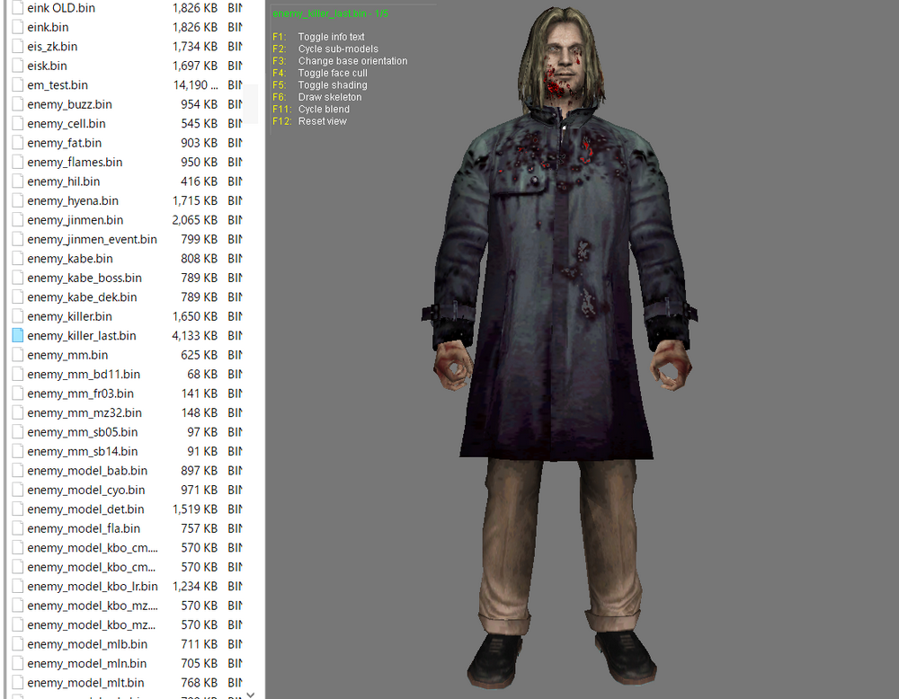
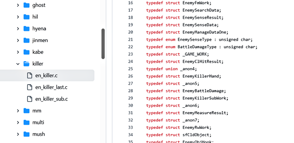
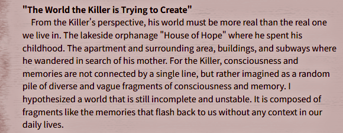
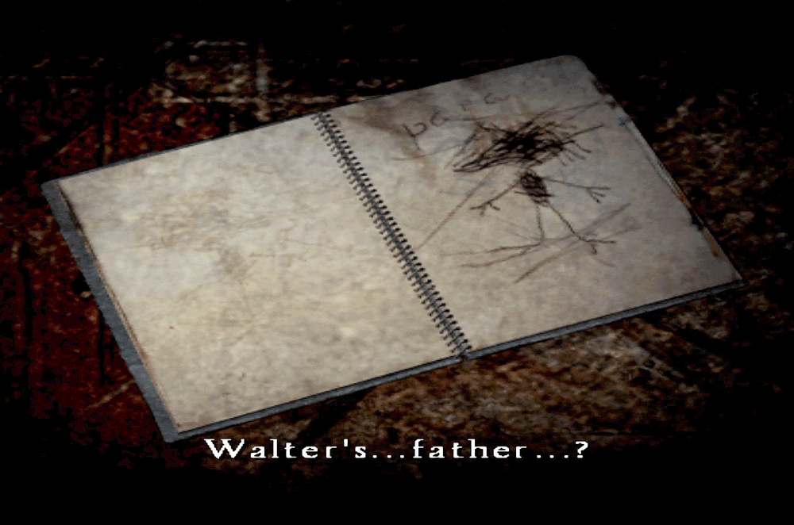
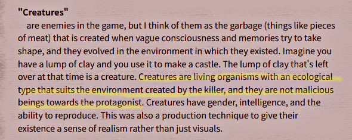
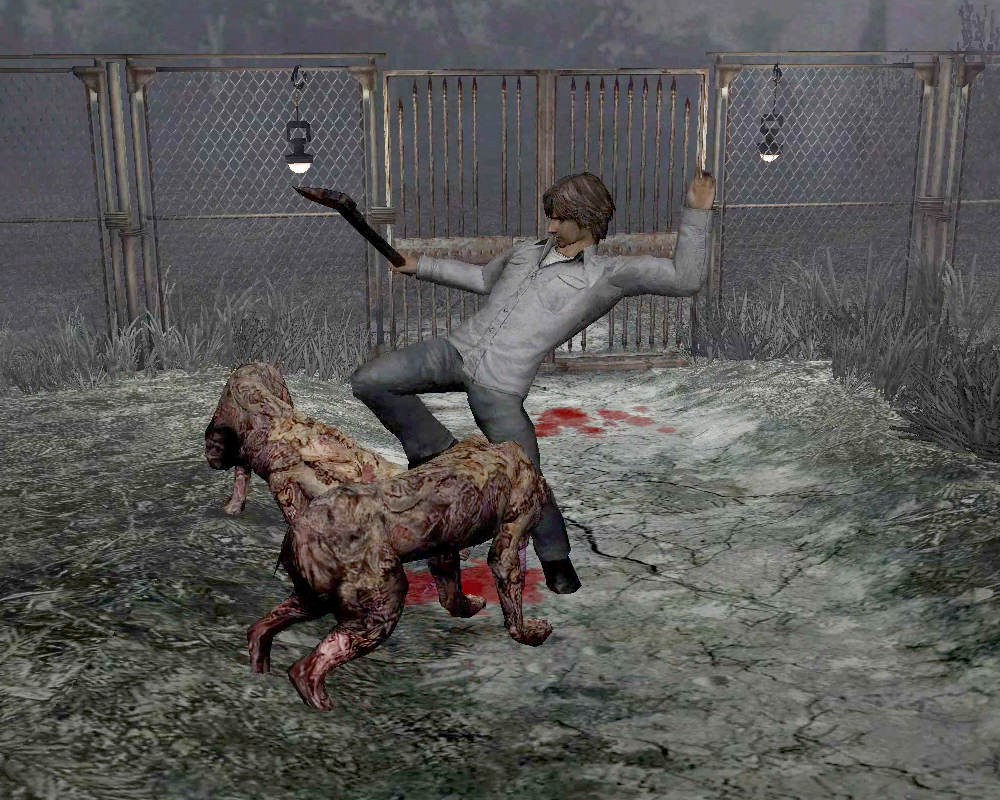
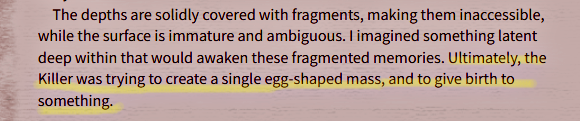
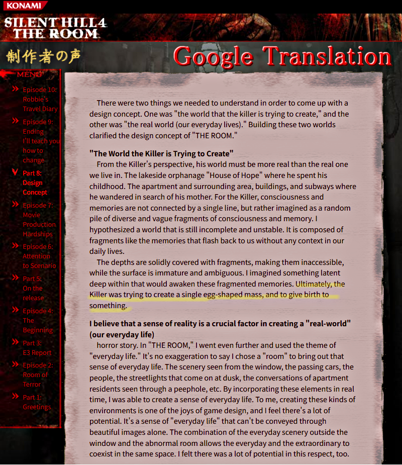
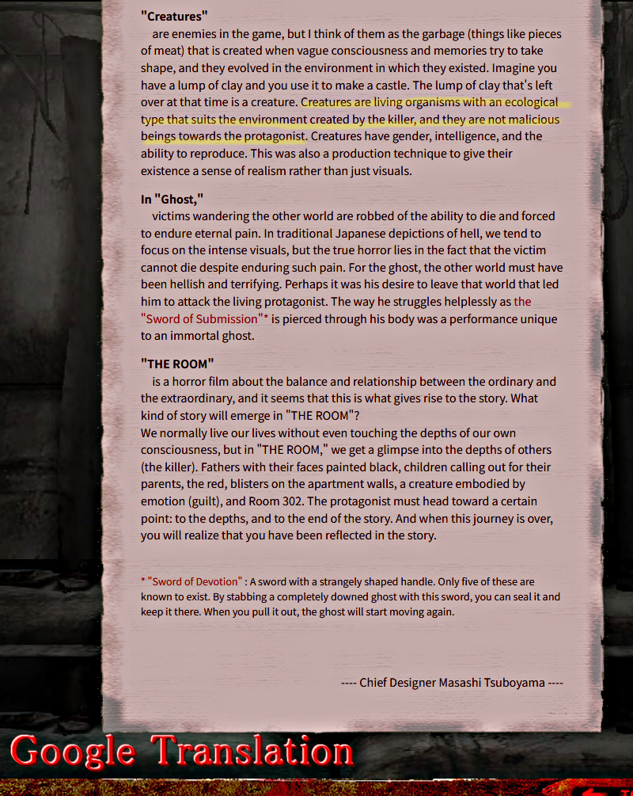

[SH4] The World the Killer Is Trying to Create

The Creators of SH4 Have Referred to Walter as "the Killer" in the Game Data.
![[SH4] The World the Killer Is Trying to Create](img/da26.png)
This is a mirror of the DeviantArt version linked above, provided as a backup and for easier access.

The creators of SH4 have referred to Walter as "the Killer" in the game data—whether it's in the character and weapon textures or in the programming itself.

Even on SH4's old official Japanese site, he was called that, and designer Tsuboyama-san talked about the design concepts behind "the world the Killer is trying to create."
I thought the website did it to avoid spoilers (strategy sites back then were vague about him, calling him "the man in the coat" lol), but it's interesting that the in-game data is the same way.
There might be an English translation out there somewhere, but just in case, I'll share it here. You can read the entire content by translating the page at the link below.
🌐制作者の声「第8回:デザインコンセプト」チーフデザイナー 坪山優史
From Konami SILENT HILL 4 THE ROOM, Developer's Voice" Vol. 8: "The Design Concept" Chief Designer: Masashi Tsuboyama
https://web.archive.org/web/20071207104653/http://www.konami.jp/gs/game/sh4/08roomq.html
Most of the information, such as about the monsters (creatures), is already on the wiki and other places, so there's not a lot that's brand new, but a few things really caught my eye.
✅ First, regarding "the world the Killer is trying to create." Tsuboyama-san said, "His world is made up of memories and fragments of his consciousness from his childhood. His deepest parts."

In the second half of the game, in a sketchbook drawn by the killer's younger self, the image of his father is blacked out. This suggests that he couldn't draw his father because he didn't even know what he looked like. Even the world he created is full of imperfections. So sad.

✅ Second, there are also places where you go, "Wait?" I wonder if "Creatures are living organisms adapted to the environment created by the Killer, and they are not malicious toward the protagonist" is really true???

But they attack me like crazy?! How is that not malicious???

✅ And the last, that part where "Ultimately, the Killer was trying to create a single egg-shaped mass and give birth to something" really makes me think.

That guy at the end?

Since this site was published after the SH4 release, it's probably not about unused information.

